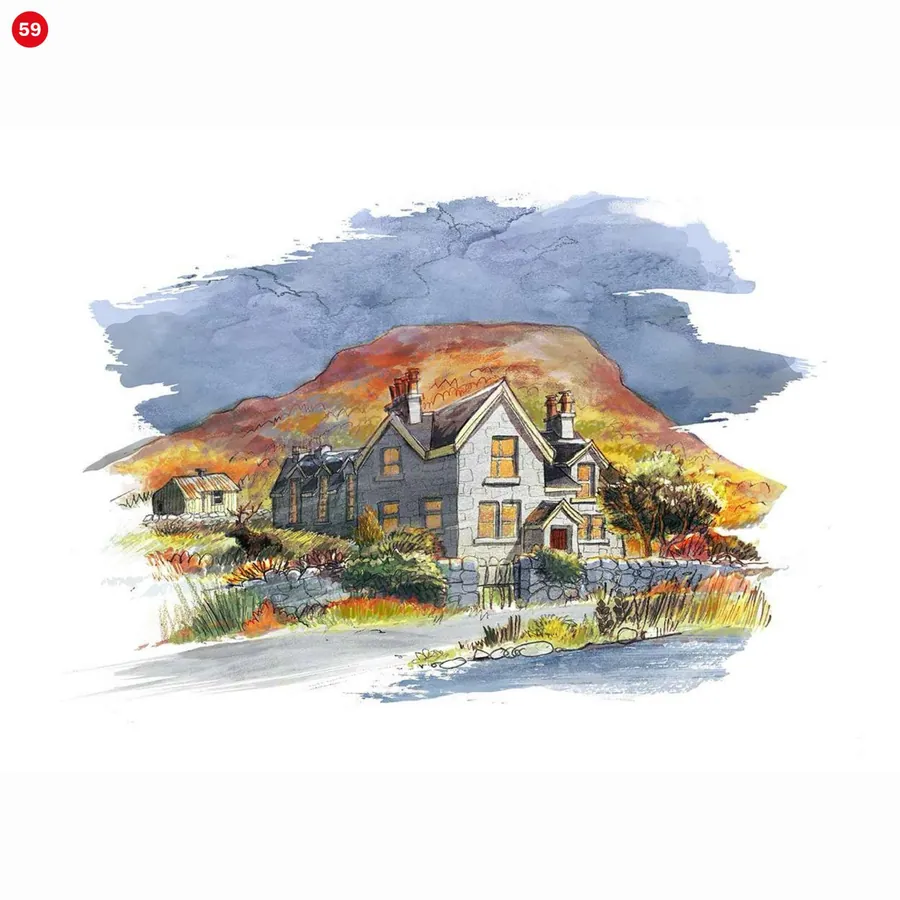
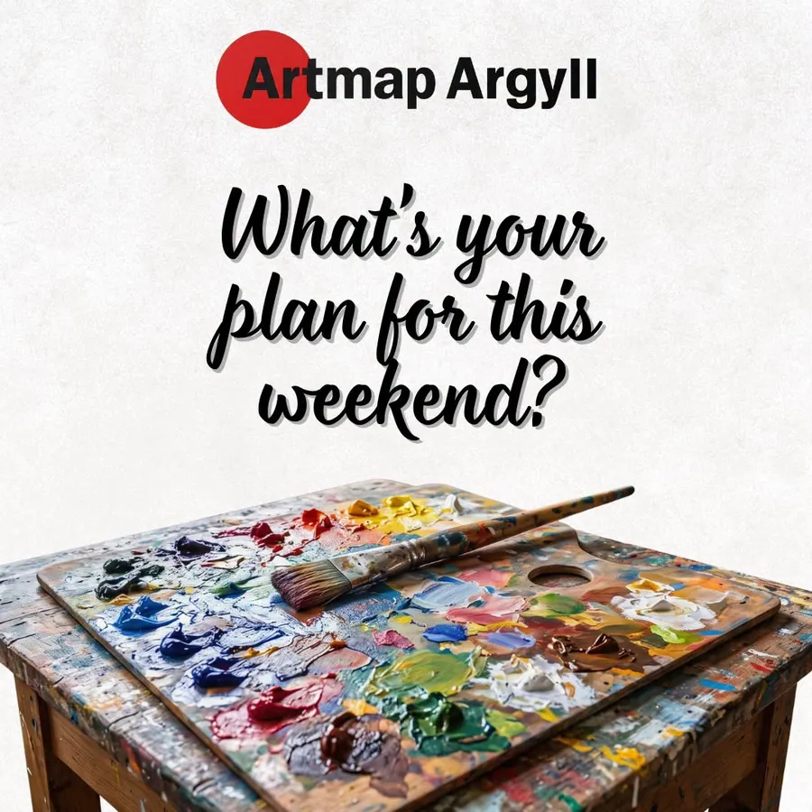

Artmap Argyll · Social Media · স্কটল্যান্ড
Open Studios-এ আসার কারণটা গল্পে তুলে ধরা
স্কটল্যান্ডের পশ্চিম উপকূলের শিল্পীদের Network Artmap Argyll। প্রতিবছর সবার জন্য তাঁরা Studio খুলে দেন। এলাকার মানুষ জানতেন, বাইরের মানুষ প্রায় জানতেনই না।
একনজরে
- শিল্পীদের দৃষ্টিভঙ্গি থেকে Copy: Event-এর ঘোষণা ছাড়িয়ে, ঘুরে আসার টান তৈরি।
- আর্গাইলের উপকূল আর প্রকৃতির সঙ্গে মিশে থাকা, জায়গাটির নিজস্বতা তুলে ধরা ভাষা।
- Artist Feature, Reel Script আর Comment ও Nomination আহ্বান করা Post।
- Client
- Artmap Argyll
- অবস্থান
- লখগিলপহেড, আর্গাইল, স্কটল্যান্ড
- মাধ্যম
- কাজ
- Caption, Artist Feature, Reel Script


01 / 04
সমস্যা যেখানে
Arts Community-এর জন্য Copy-তে ভারসাম্য লাগে। পুরোনো সমর্থকের কাছে আন্তরিক হতে হবে, আবার কখনো Arts Event-এ যাননি এমন মানুষকেও স্বাগত জানাতে হবে।
খাঁটি অভিজ্ঞতার কদর করেন যাঁরা, তাঁদের শুধু “আমাদের Event-এ আসুন” বলে টানা যায় না।
02 / 04
পরিকল্পনা যা ছিল
আগে অভিজ্ঞতার টান: কাজ চলা Studio-তে ঢোকা, শিল্পীর সঙ্গে গল্প, সত্যিকারের হাতে তৈরি কিছু বাড়ি নিয়ে যাওয়া। শুধু Event Listing নয়।
- শুধু তারিখ নয়, Open Studios-এর অনুভূতিটাও ভাষায় আনা।
- পশ্চিম উপকূল আর তার প্রকৃতিকে লেখায় রাখা, যেন অন্য কোনো শিল্পমেলার সঙ্গে গুলিয়ে না যায়।
- প্রতিটি Reel শুরু হোক একটি দৃশ্য দিয়ে, তারপর বিস্তারিত তথ্য।
03 / 04
আমি যা করেছি
- Open Studios ২০২৫ Series-এর Facebook Caption।
- সদস্য শিল্পী ও তাঁদের কাজের পরিচয় তুলে ধরা Feature Post।
- অনুষ্ঠানের প্রচার ও শিল্পীদের অংশগ্রহণের আহ্বানের জন্য Reel-এর Script।
- মন্তব্য করতে ও শিল্পীদের নিজেদের মনোনীত করতে উৎসাহ দেওয়া Community Post।
04 / 04
ফল যেমন হয়েছে
2025Open Studios-এর প্রচার
পশ্চিম উপকূলস্কটল্যান্ডের
শিল্পীদের দৃষ্টিভঙ্গিতেVoice ও Framing
CommunityEngagement-first Post
Community Organisation-এর কাজ। Analytics প্রকাশ করা হয়নি।